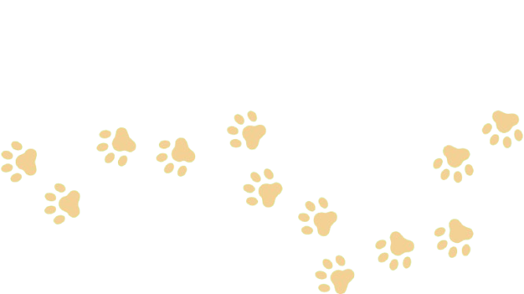

Help support Uncaged as we fight against the cruelties of animal testing and abuse. Find out more about animal testing below and learn how you can get involved.

Each year, millions of animals are killed in laboratories for medical development and training, curiosity, and chemical, drug, food, and cosmetics testing. During these procedures, some are forced to undergo torturous conditions due to the nature of the testing, sometimes involving toxic fumes, immobilization, etc., and are deprived of nearly everything important to them--they can be confined to small, dirty cages, socially isolated, psychologically traumatized, and not given proper food and water.
China, Japan, United States of America, Canada, Australia
Mice, fish, rates, birds, dogs, cats, rabbits, and nonhuman primates (monkeys).
China, United States of America, Canada, South Korea, Japan
United States of America, China, Japan, Brazil, Canada
The most reliable number we have is from 2015. 192.1 million animals--including the 80 million experimented on and millions of others killed for their tissue or used for genetic modification--were subjected to this cruelty in a single year.
The Animal Welfare Act, passed in 1966, regulates the transportation of animals in experimentation but not the actual experiments themselves.Reportedly, almost 99% of animals used in animal testing are not protected in any way by the AWA.
Make a difference and help our furry friends!